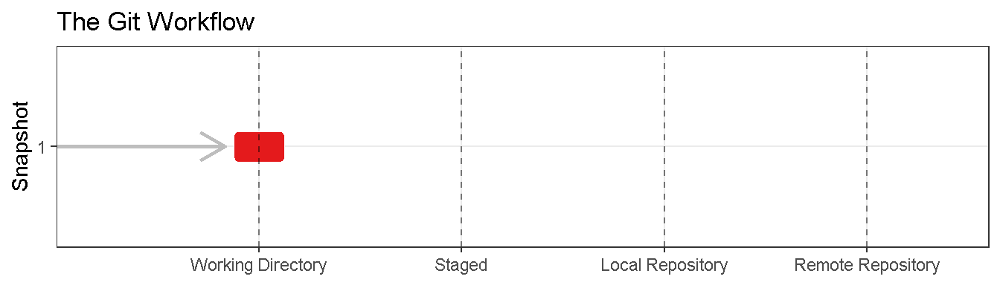
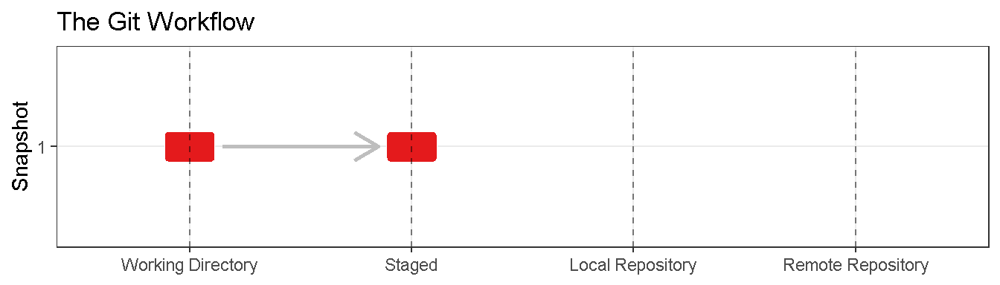
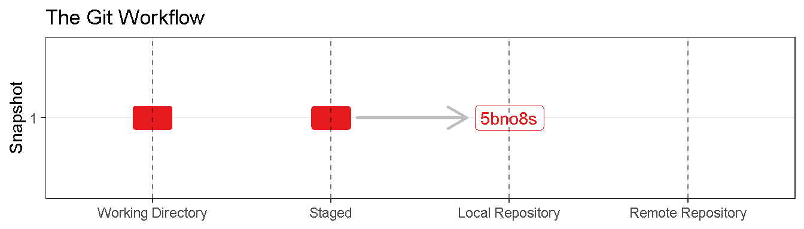
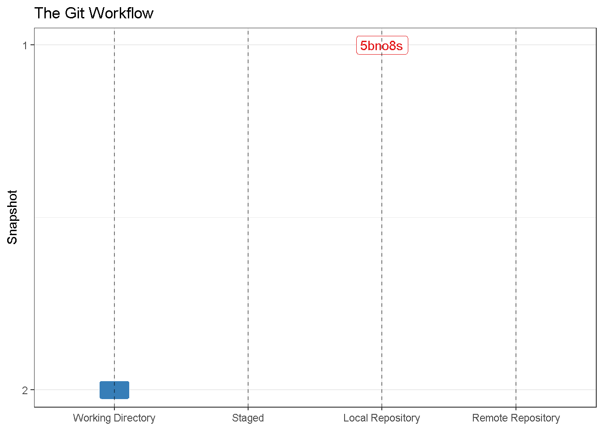
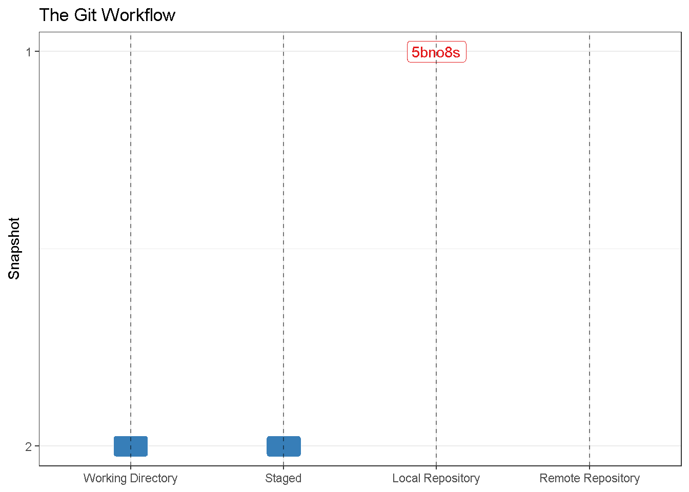
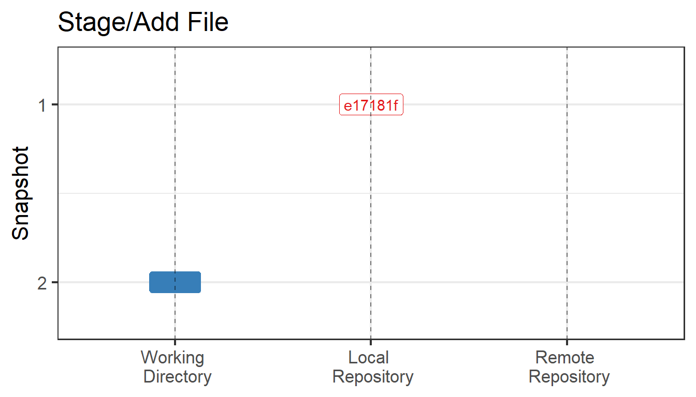

2 The Basic Git Workflow
One problem with widespread adoption of Git at ADF&G is that there is no accepted standard for how to interact with Git. The options are GUI or shell/terminal. Shell/terminal is probably the best, if most intimidating. Everything you need to do can be done in the terminal and I’ll demonstrate that for the most important commands in the text that follows. In order to use the terminal effectively it helps to make one change to the Rstudio defaults by executing the following point and click commands: Tools>Terminal>Terminal Options…>(change initial directory to ‘project directory’). This change will ensure your terminal opens in the correct directory and save some unnecessary terminal prompts.
That said, Rstudio has a very rudimentary Git GUI that can save a lot of keystrokes for some simple commands. For this reason it’s my opinion that a combination of the terminal and the Rstudio GUi is the easiest approach. I will point out appropriate Rstudio GUI options when appropriate.
2.0.1 git init
If you have an existing Rstudio project1 that needs to become a git repository git init is the appropriate command. In the example below I have a Rstudio project in a folder names “git_practice” on my c drive. In the terminal sequence below I: 1)verify my directory is not a git repository with git status, 2) make is a git repository with git init, 3) verify the directory is now a git repository with git status.
amreimer@DFGSXQDSF223076 MINGW64 /c/git_practice
$ git status
fatal: not a git repository (or any of the parent directories): .git
amreimer@DFGSXQDSF223076 MINGW64 /c/git_practice
$ git init
Initialized empty Git repository in C:/git_practice/.git/
amreimer@DFGSXQDSF223076 MINGW64 /c/git_practice (master)
$ git status
On branch master
No commits yet
Untracked files:
(use "git add <file>..." to include in what will be committed)
.Rproj.user/
git_practice.Rproj
nothing added to commit but untracked files present (use "git add" to track)Conversely, if you are starting a brand new analysis creating a git repository at the same time you create your R studio project is easy: New Project>New Directory>New Project>(provide name, location and check ‘create git repository’. This sequence runs git init in the background. I’ve executed those commands to create a new Rstudio project on my c drive names “git_practice_R”. Let’s check if it is a git repository.
amreimer@DFGSXQDSF223076 MINGW64 /c/git_practice_R (master)
$ git status
On branch master
No commits yet
Untracked files:
(use "git add <file>..." to include in what will be committed)
.gitignore
git_practice_R.Rproj
nothing added to commit but untracked files present (use "git add" to track)The git init command creates a git repository in your project directory. At this point the repository is empty, but the git workflow has been enabled which will allow us to commit to the repository in the future. The arrow indicates your analysis has moved into the git workspace and now sits in your working directory.

2.0.2 git add
In the git status response above 2 files were noted that could be added to the repository. Before we do that let’s create third file names fib_seq.R which contains nothing but the vector c(1, 1). In the terminal sequence below I: 1) view which files need to be added with git status, 2) add each file one at a time with git add, 3) verify all files have been added with git status.
amreimer@DFGSXQDSF223076 MINGW64 /c/git_practice (master)
$ git status
On branch master
No commits yet
Untracked files:
(use "git add <file>..." to include in what will be committed)
.gitignore
fib_seq.R
git_practice.Rproj
nothing added to commit but untracked files present (use "git add" to track)
amreimer@DFGSXQDSF223076 MINGW64 /c/git_practice (master)
$ git add .gitignore
amreimer@DFGSXQDSF223076 MINGW64 /c/git_practice (master)
$ git add fib_seq.R
amreimer@DFGSXQDSF223076 MINGW64 /c/git_practice (master)
$ git add git_practice.Rproj
amreimer@DFGSXQDSF223076 MINGW64 /c/git_practice (master)
$ git status
On branch master
No commits yet
Changes to be committed:
(use "git rm --cached <file>..." to unstage)
new file: .gitignore
new file: fib_seq.R
new file: git_practice.RprojThe Rstudio GUI makes this easier. You simply open the git pane and click the radio button next to each file you would like to add (under the staged column). You can verify Rstudio stage and git add do the same thing but running the it status command in the terminal.
Input screenshot.
Use of git add stages files you would like to track for inclusion in your git repository. The arrow indicates that files withing your working directory were moved into the staging area.

On occasion there are files in your working directory which you do not want Git to track. If you don’t add them they will not get tracked but it can also be cumbersome to have a long list of files which Git recognizes as present in your working directory but you are not actively tracking. The solution is to pen the file .gitignore and add the files you don’t want to track line by line. You can use wildcards if you prefer not to track all files of a certain type and or specify folders i f you don’t want to track anything inn certain sub-directories.
2.0.3 git commit
In the git status response above 3 files were staged. Let’s commit those files in the terminal.
$ git commit -m "inital commit" -m "started a fibinochi sequence for latter change/commit example"
[master (root-commit) 046e2e8] inital commit
3 files changed, 18 insertions(+)
create mode 100644 .gitignore
create mode 100644 fib_seq.R
create mode 100644 git_practice.Rproj
amreimer@DFGSXQDSF223076 MINGW64 /c/git_practice (master)
$ git log
commit 046e2e85b1bfa1d7c4196cf763c4228519b5181b (HEAD -> master)
Author: Adam Reimer <adam.reimer@alaska.gov>
Date: Sat Jun 24 10:17:10 2023 -0800
inital commit
started a fibinochi sequence for latter change/commit exampleIn the terminal sequence above I commit all three staged files with a single line of code. Notice the commit message is broken into 2 parts. the first part is called the title. This title should be brief (limited to xx characters) as it will be included on most commit summaries and it’s nice if the whole message shows up in the limit space provided for it. The second message is called the detail and can be longer. The detail is still limited to yy characters so be terse but this is the place to provide some explanation beyond what you can capture in the title. Both messages can be seen in the git log.
Again, this process can be quite efficiently accomplished in the Rstudio GUI.
Input screenshot.
Use of git commit places records the snapshot of your stages files into your local repository. The arrow indicates that staged files withing your working directory are not recorded in their present state within your local repository.

The git workflow described so far forms the bases on reproducible research using Git. If additional changes are made and saved the the working directory your Git workspace will look something like:

Those changes are then added:

And then committed:
And this cycle will repeat many times:

2.0.3.1 When to Commit?
Saves and a commits serve different purposes. As we all know, save can and should be used frequently… many times an hour and/or any time you are stepping away from your work. This use is agnostic to whether the analysis is using a traditional or git workflow.
In contrast, commits are made for two reasons. First, a commit should be made whenever the analysis is at a point which you may want to revisit. Examples include; adding new data, adding a new component to the analysis, or any time the code was run and the results were distributed. Any one of these tasks may have resulted in a new ‘version’ in the traditional workflow but they don’t have to be major updates. The commit may also snapshot the code halfway through a new feature, at significant steps in a new features development, or prior to experimenting with a new feature. These commits allow you to revert back to the previous code in the event the new feature is not an improvement. An example commit message in these situations could look something like:
age-at-maturity trend
allow for temporal trend in age at maturity using logistic regression w a year covariate.A second reason to commit is when the changes are substantive enough that the line-by-line change may be difficult to track if you did not commit until the new data/feature are complete. An example would be a run reconstruction project where you have multiple data sources and associated data entry formatting codes associated with each. A mid-process commit message in that scenario could be something like:
partial add 2024 data
inriver harvest and netting added and changed to rectangular format. Need to add marine harvest and all index of abundacne dataThe most important thing to note regarding commit messages is that, unlike save, there is no temporal component. While saves are designed to minimize the risk of lost work and should be frequent in time, commits are designed to record importance stages of the analysis and commits should be frequent with respect to progress. A difficult feature may take days to code but represent a single commit, provided the actual changes to the code are modest. Efficiency in commit frequency pay off when the repository is being revisited at a later date.
2.0.3.2 How to View Differences Between Commits
To view differences between commits the GUIs really outperform the terminal, so much so I wont show git diff in this document. In Rstudio, we view the commit differnces through the git tab (Diff>Changes). Color coding is used to emphasizes line by line changes, with green representing new code and red representing the code it replaced.
Screenshot
2.0.4 git log
The veiw our commit history in the terminal use git log. The advantage to using git log is that both the title and detail message for each commit are shown. To my knowledge the Rstudio GUI only shows the title. There are more powerful GUI’s which show both.
In Rstudio, we view the commit history through the git tab (Diff>History)
Screenshot
side note: if you have an existing project directory that needs to become an Rstudio project the appropriate point and click sequence is New Project>Existing Directory>(provide location)↩︎